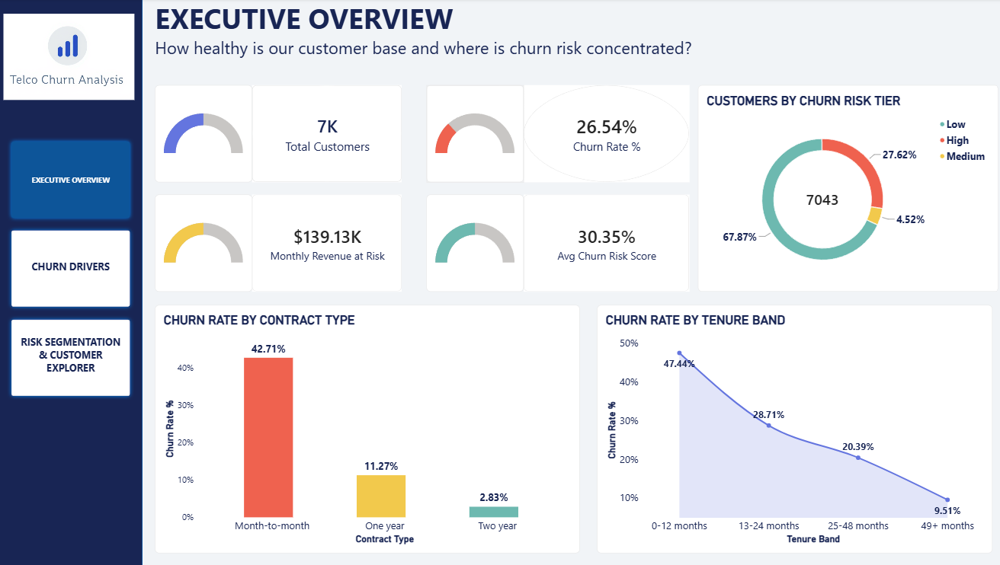
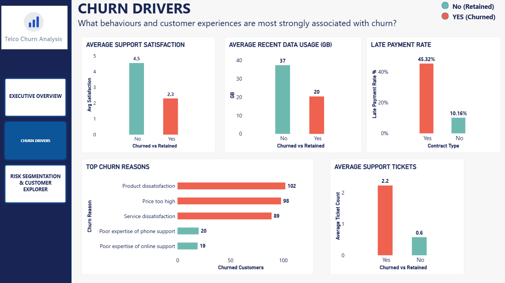
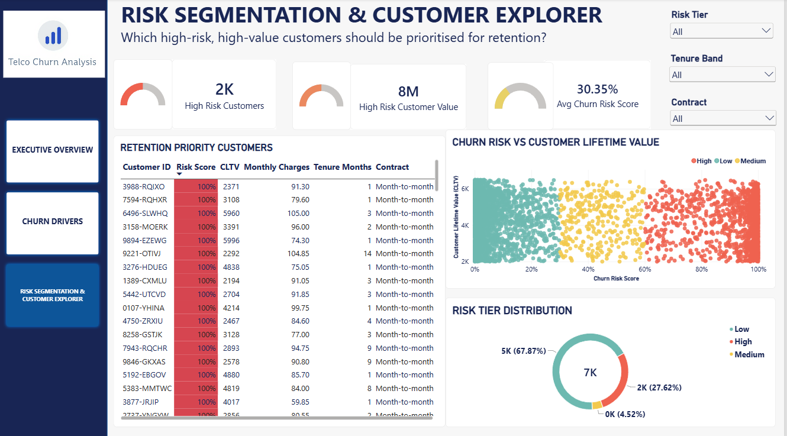

Executive Overview

Executive overview showing total customers, overall churn rate, monthly revenue at risk, average churn-risk score, customer risk tiers, churn by contract type and churn by tenure band.
Churn Drivers Analysis

Behavioural comparison of churned and retained customers across support satisfaction, recent data usage, late-payment behaviour, support-ticket volume and customer-reported churn reasons.
Risk Segmentation & Customer Explorer

Customer-level retention view combining churn-risk scores, customer lifetime value, risk tiers and interactive filters to identify high-risk, high-value customers for priority outreach.
Business Objective
Customer churn creates a direct revenue impact for telecom providers. The objective of this project was to move beyond simply reporting historical churn and develop an analytical solution that helps understand where churn is concentrated, what behaviours are associated with it and which customers should be prioritised for retention.
The analysis focused on three key business questions: which customer segments experience the highest churn, which behavioural signals appear before customers leave, and which currently active customers combine high churn risk with high customer lifetime value.
The final solution combines relational SQL analysis, behavioural feature engineering, predictive modelling and interactive Power BI reporting into a single end-to-end churn diagnostic workflow.
Data Foundation
The base dataset contains 7,043 telecom customers with demographic, account, contract, billing, churn and customer lifetime value information.
Two additional datasets were created to support behavioural analysis: monthly customer usage and customer support tickets. These tables were linked to the customer table through a customer identifier to create a relational three-table model.
- Customers: one row per customer containing tenure, contract type, monthly charges, churn status, churn score, CLTV and churn reason.
- Monthly Usage: customer-month level records containing data usage, call minutes and late-payment behaviour.
- Support Tickets: customer support interactions containing ticket category, resolution time and satisfaction score.
Monthly usage and support-ticket data were synthetically generated and deliberately correlated with churn behaviour to simulate realistic early-warning patterns. The predictive model therefore demonstrates the analytical workflow rather than production-level predictive performance on unseen real-world behavioural data.
Key Insights
- The overall customer churn rate was approximately 26.5%, representing a significant retention challenge.
- Month-to-month customers recorded a churn rate of approximately 42.7%, compared with only 2.8% for customers on two-year contracts.
- Approximately $139K in monthly revenue was associated with customers who had churned, with a large proportion concentrated among month-to-month customers.
- Churn was concentrated among newer customers, with customers in their first 12 months recording a churn rate of approximately 47.4%.
- Churned customers averaged approximately 20 GB of recent data usage compared with around 37 GB among retained customers.
- Approximately 45.3% of churned customers experienced a late payment in their final two months compared with 10.2% of retained customers.
- Average support satisfaction among churned customers was approximately 2.3 compared with 4.5 among retained customers.
- Product dissatisfaction, price and service dissatisfaction were among the most frequently reported churn reasons.
- The combined analysis indicates that declining usage, late-payment behaviour and deteriorating support satisfaction can serve as useful early-warning indicators of customer churn.
Business Recommendations
- Prioritise customers who combine high churn-risk scores with high customer lifetime value so retention resources are focused on customers with the greatest business value.
- Target month-to-month customers with personalised loyalty, contract-conversion or retention offers because this segment demonstrates substantially higher churn.
- Develop early-warning retention triggers for customers showing declining usage, repeated late payments or deteriorating support satisfaction.
- Strengthen onboarding and proactive engagement during the first year of the customer relationship, when churn risk is highest.
- Monitor support satisfaction and recurring customer complaints to identify service issues before they result in customer churn.
- Use churn-reason analysis to design targeted retention strategies addressing price concerns, product dissatisfaction and service experience.
- Use the Risk Segmentation & Customer Explorer dashboard to create prioritised retention lists for customer-service or retention teams.
Outcome
The project transformed customer, behavioural and support data into an end-to-end churn analytics solution covering data preparation, relational database modelling, exploratory analysis, predictive modelling and business intelligence reporting.
The final Power BI solution provides three levels of analysis: an executive view of churn and revenue exposure, a diagnostic view of customer behaviours associated with churn, and a customer-level view for retention prioritisation.
The solution demonstrates how analytics can move from descriptive reporting toward actionable customer segmentation by combining churn probability with customer lifetime value.
Key Performance Indicators
Churn Risk Model
After aggregating customer usage and support interactions to customer level, I developed a logistic regression model to estimate customer churn risk.
The model used balanced class weighting to account for the difference between churned and retained customers.
- ROC AUC: 0.985
- Churn-class precision: 0.88
- Churn-class recall: 0.94
The strongest predictive signals included support satisfaction, recent usage, tenure, late-payment rate, monthly charges and support-ticket volume.
Because some behavioural variables were intentionally generated with relationships to churn, these model metrics should be interpreted as evidence of the modelling workflow rather than expected production performance.
Approach
- Reviewed the original telecom customer dataset and identified the demographic, account, contract, billing, churn and customer-value fields required for analysis.
- Used Python and Pandas to clean and standardise the customer dataset, including correcting Total Charges values for zero-tenure customers.
- Generated monthly usage and support-ticket datasets to simulate customer behavioural information across the customer lifecycle.
- Designed a relational database in MySQL containing customers, monthly usage and support-ticket tables linked through customer identifiers.
- Used SQL to analyse churn rates by contract type and tenure, customer revenue exposure, late-payment behaviour and churn reasons.
- Aggregated monthly usage and support-ticket information into customer-level features using Python.
- Engineered behavioural variables including recent data usage, late-payment rate, support-ticket volume and average satisfaction.
- Trained a logistic regression churn-risk model using Scikit-learn with balanced class weighting.
- Generated churn-risk probabilities and grouped customers into risk tiers for customer segmentation.
- Combined churn-risk scores with customer lifetime value to identify high-risk, high-value customers requiring priority retention attention.
- Imported the final scored customer dataset into Power BI and developed DAX measures for churn, customer segmentation and revenue-risk reporting.
- Created a three-page Power BI dashboard covering Executive Overview, Churn Drivers, and Risk Segmentation & Customer Explorer.
- Applied interactive filters, KPI cards, customer segmentation and business storytelling principles to make the final dashboard suitable for retention decision-making.